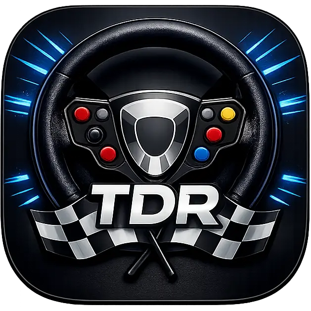

TOP DOWN RACE
CARGANDO MOTOR
0.0 s
GIRA TU DISPOSITIVO
Top Down RACE se juega en horizontal.
⚠ DEV 1.0.167
VERSIÓN DE DESARROLLO · LOS CAMBIOS SE PRUEBAN AQUÍ ANTES DE PASAR A BETA.
ROTATE YOUR DEVICE
Top Down RACE is played in landscape.
⚠ DEV 1.0.167
DEVELOPMENT VERSION · CHANGES ARE TESTED HERE BEFORE PROMOTION TO BETA.